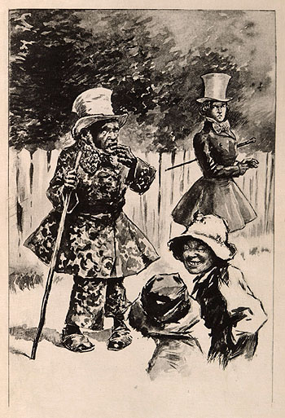

THE BELL-RINGER IMITATED HIS GRACES
Illustration by E. W. Kemble
Édition de Luxe Edition of Pudd'nhead Wilson
(Hartford: American Publishing Company, 1899)
Clifton Waller Barrett Collection | University of Virginia